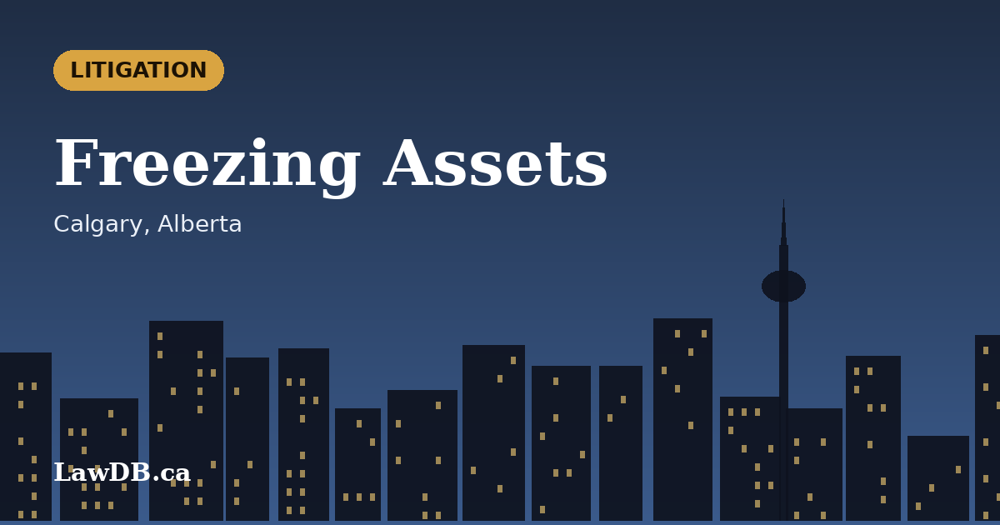
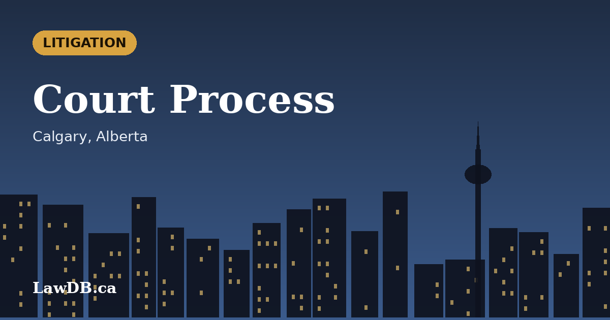
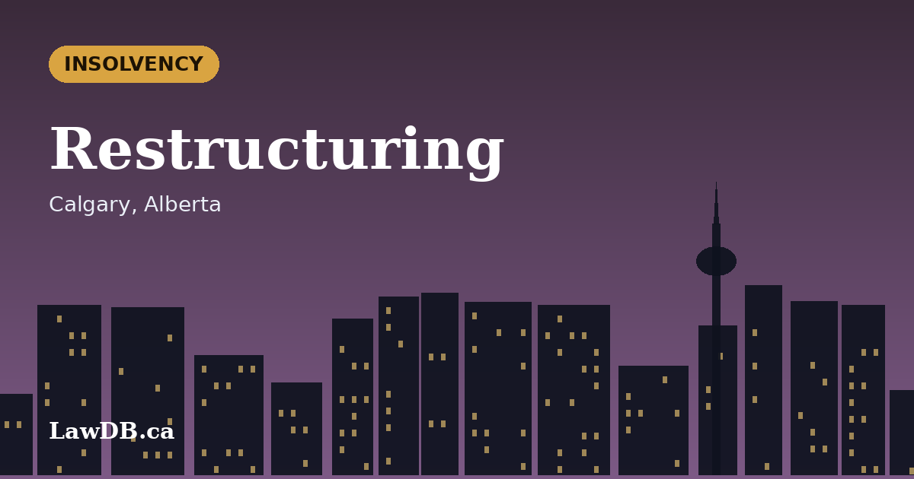
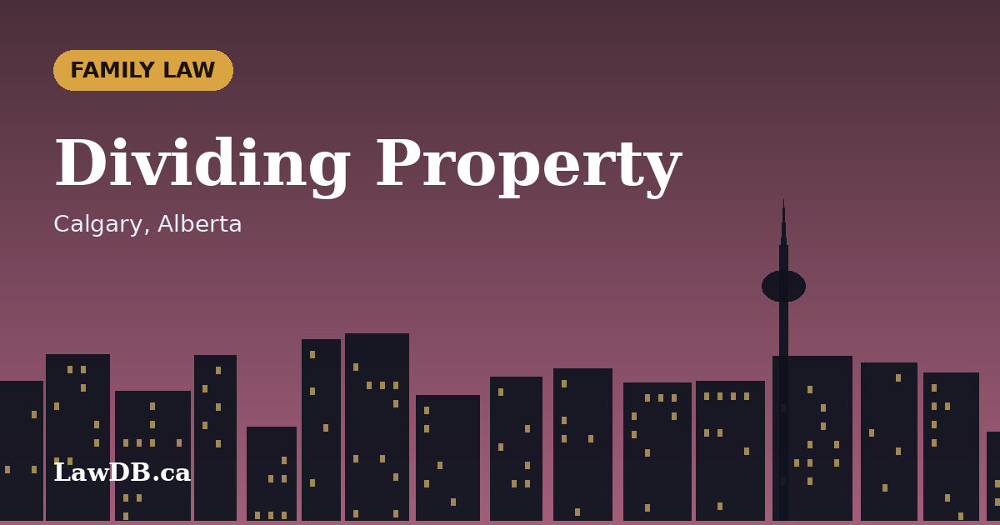
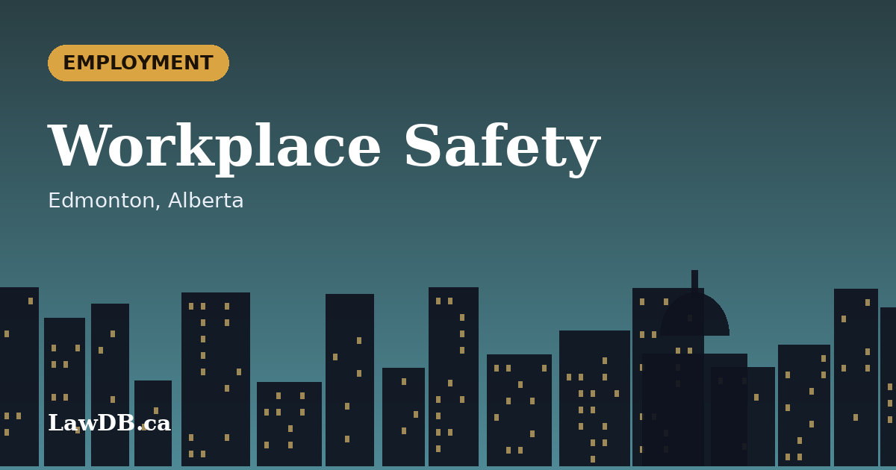

Local legal guides, one city at a time, now including Calgary and Edmonton - the rules, courts, and processes that actually differ from Toronto to Vancouver to Montreal.
Toronto is the only city in Ontario that charges its own land transfer tax on top of the province's. Here's what that means at closing, and what the first-time buyer rebates actually cover.
Ontario's Courts of Justice Act gives every party the right to bilingual proceedings, but Ottawa is where that right is easiest to actually exercise. Here's why that matters for a family law matter.
An impaired driving charge in Hamilton is heard at the John Sopinka Courthouse, and the local Crown's office has its own practices around resolution discussions. What that means for how the case actually unfolds.
Mississauga's Airport Corporate Centre and Meadowvale business parks put a lot of companies under long commercial leases with complex clauses. The disputes that end up in litigation usually trace back to one of a few recurring gaps.
Quebec selects its own economic immigrants under a decades-old accord with the federal government, running mostly separately from the Express Entry system used in the rest of Canada. What that means if Montreal is the destination.
Quebec is the only province governed by a civil code rather than common law, and succession planning follows a different path here - notarial wills, a distinct spousal property regime, and terminology the rest of Canada doesn't use.
BC's 2021 shift to the Enhanced Care model changed who can sue after a crash and for what. Here's what actually changed for a Vancouver driver, and what didn't.
Surrey's presale condo market runs on disclosure statements and assignment clauses most buyers never read closely. What actually gets checked before a presale closing, and why the assignment clause matters most.
Are you a lawyer or law firm? These guides cover how Canadian firms actually get more clients online - SEO, Google Business Profile, directories, referrals, reviews, and paid ads.
A practical breakdown of how Canadian lawyers actually generate new clients in 2026, in the order most firms should tackle them.
The technical and content basics that move the needle before you hire an agency.
What separates a useful directory from a dead one, and how to prioritize your listings.
Costs, ROI, and what a realistic budget looks like for legal keywords.

A Mareva injunction freezes a defendant’s assets before judgment. Here is how the order works in Alberta, what a court needs to see, and the risks for the person asking for it.
Alberta’s Prompt Payment and Construction Lien Act, in force since August 2022, added payment timelines and adjudication to the lien system. What owners, contractors and subs should know.
From Crown leases to regulator approvals, an Alberta oil and gas asset sale has more moving parts than most. A plain overview of the documents, diligence and approvals.
When several companies share an oil and gas or resource project, a joint operating agreement sets who runs it, who pays and what happens when partners disagree.

From statement of claim to trial, and the mediation and delay rules in between. A plain-language walk through an Alberta commercial lawsuit.
Net versus gross rent, renewal rights, assignment and guarantees. The clauses that decide most Alberta commercial lease disputes.
Two Alberta bodies regulate most energy activity, and a third, the federal regulator, handles interprovincial pipelines. A short map of who decides what.
Non-Canadians acquiring control of a Canadian business may face notification or review. A short guide to how the Investment Canada Act affects an Alberta acquisition.

How the two main Canadian restructuring routes differ, and how Alberta’s Redwater decision reshaped priorities in oil and gas insolvencies.
Energy and mining projects that could affect Indigenous rights trigger a duty to consult. A guide to how it works and how Alberta handles it.
Growers hold federal licences, while shops and distribution sit under Alberta’s regulator. A short overview of the two layers.
Storing CO₂ underground raises a basic question: who owns the space? Alberta answered it by statute. What that means for carbon capture projects.
Most Alberta start-ups raise money through private placements rather than a prospectus. How the exemptions work and what to watch.

Alberta limits some foreign ownership of farmland, farms often carry energy surface leases, and family transfers raise tax questions. A checklist of issues.
Both avoid a courtroom, but they work very differently. How mediation, arbitration and judicial dispute resolution compare in Alberta.

Alberta starts from a presumption of equal sharing, but not everything is on the table. How exempt property, business value and farm assets are treated.
Alberta’s injury system has a two-year clock, a cap on minor injuries and no-fault accident benefits. What each means for someone hurt in a collision.
Title searches, real property reports, mortgage documents and registration. What happens behind the scenes on an Alberta home purchase.

Alberta’s occupational health and safety law was rewritten in late 2021. A plain overview of hazard assessments, committees and refusal rights.

The Employment Standards Code sets a floor, while common law notice can be much higher. What to review before accepting a severance package.
Municipalities decide development permits, and appeal deadlines are short. How Alberta’s appeal boards and tribunal fit together.
Alberta’s anti-SLAPP law lets courts dismiss some claims early. How defamation works, the main defences and where reviews and posts fit.
A shareholder agreement decides what happens when owners disagree, want out or die. The key clauses for an Alberta corporation.

Three documents cover different risks. What each one does in Alberta and what happens without them.
Condo boards have real powers, and owners have rights. How bylaws, reserve funds and special assessments work under Alberta’s Condominium Property Act.